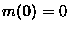
,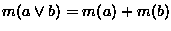
wheneverMiroslav Hamouz and Mirko Navara
1
Center for Machine Perception
Faculty of Electrical Engineering
Czech Technical University
Technická 2, 166 27 Praha, Czech Republic
xhamouz@lab.felk.cvut.cz,
navara@cmp.felk.cvut.cz
. . . . . . .
Looking for the appropriate algebraic structure describing the events of a quantum mechanical system, Birkhoff and von Neumann [1] suggested the notion of orthomodular lattice. This structure possesses a common generalization of Boolean algebras and lattices of closed subspaces of Hilbert spaces. We refer to [5] for the basic information about orthomodular lattices.
Let us first review basic notions as we shall use them in the sequel.
An orthomodular lattice is a lattice L with a least and a greatest element (denoted by 0, 1, respectively) and with a unary operation ' (orthocomplementation) satisfying the following properties for all
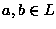
: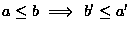
,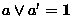
,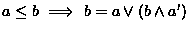
.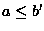
. An atom of L is an element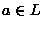
such that there is no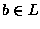
satisfying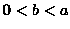
. A block of L is a maximal Boolean subalgebra of L.In [3], Greechie suggested a description of an orthomodular lattice as a union of its blocks. It can be efficiently represented using hypergraphs.
A hypergraph is a couple
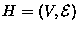
consisting of a nonempty set V (of vertices) and of a covering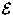
of V by nonempty subsets (edges). A loop of order n in H(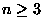
) is an n-tuple of edges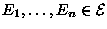
such that the intersections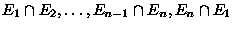
are nonempty and mutually disjoint.Let L be a finite orthomodular lattice and let us denote by
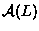
the set of all atoms of L. The Greechie diagram of L (see [3]) is a hypergraph such that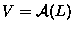
and consists of all maximal subsets of mutually orthogonal elements of .
In [2], necessary and sufficient conditions are given for a
finite hypergraph to be a Greechie diagram of an orthomodular lattice. However, they are quite difficult to
verify. This is why many results were obtained using a simpler
sufficient condition given in the original Greechie's Loop Lemma:
Loop Lemma (see [3,5]) : Let be a hypergraph satisfying the following conditions:
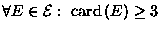
,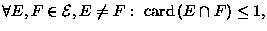
In the logico-algebraic approach to quantum mechanics, the events of the system are supposed to form an orthomodular lattice. A state of the system is described by the probabilities of events, so it corresponds to a probability measure (called also a state). Here we shall deal with more general measures attaining values in commutative groups:
Let L be an orthomodular lattice and let G be a commutative additive group. A mapping
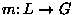
is called a G- valued measure on L if the following conditions are satisfied:
,
wheneverIn the (most common) particular case when G=R and m attains only positive values, we may equivalently say that a positive real-valued measure on an orthomodular lattice is a mapping such that its restrictions to all blocks are (ordinary) measures on Boolean algebras. Obviously, every orthomodular lattice L admits the trivial measure msatisfying m(a)=0 for all .
Originally, Greechie developed his pasting technique in order to prove the existence of an orthomodular lattice admitting no nontrivial positive real-valued measure. Of course, this is not desirable from the physical point of view. Nevertheless, this negative result had a lot of positive consequences. It became the base of many constructions which enriched the theory of quantum logics substantially. Besides, it lead to the study of axioms which ensure the existence of ``sufficiently many" measures on orthomodular lattices representing real systems. Both results described in this paper are extensions of this investigation initiated in [3].
.
Greechie diagrams and the Loop Lemma allow to understand many orthomodular lattices as unions of Boolean algebras. Greechie diagrams describe the structure of an orthomodular lattice more efficiently than the classical tools of lattice theory (e.g., Hasse diagrams). They allow to represent also the spaces of measures of orthomodular lattices; these correspond naturally to measures on their Greechie diagrams, where measures on hypergraphs are defined as follows:
Let
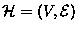
be a hypergraph and let G be a commutative additive group. A G-valued measure on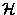
is a mapping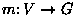
such that, for each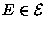
,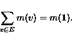
Despite the success of the Loop Lemma, its conditions (especially the absence of loops of a low order) are still quite restrictive and lead to very complex Greechie diagrams when we want to find examples with special properties of the space of measures. For this purpose, new tools were developed in [6,8,9,10]. They allow to describe the space of measures of an orthomodular lattice as the space of measures on a hypergraph which has a simplified structure. Although the algebraic correspondence is weakened, the space of measures remains completely described. The advantage is that every hypergraph represents the space of measures of some orthomodular lattice in this weaker sense. (For details, see [8,9].) This result is based on the existence of arbitrarily large finite orthomodular lattices with the spaces of measures isomorphic to those of finite Boolean algebras. This means, among others, that their spaces of measures are cones that have simplices as cone bases. As the initial step, the following lemma is proved:
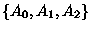
of the set of atoms satisfying the following conditions: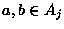
, j=0,1,2, satisfy m(a)=m(b).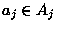
, j=0,1,2, satisfy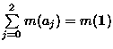
.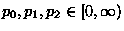
there is a unique measure mon L such that m(aj)=pj for all , j=0,1,2.The first such example was published in [10]. It has 156 atoms and 314 elements. Later on, it was optimized to an example with 134 elements. It is the orthomodular lattice L66 with 66 atoms ei,
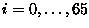
, and 66 blocks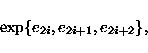
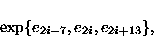
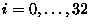
and indices are evaluated modulo 66.
The verification of conditions of the Loop Lemma for L66 is
simplified by its cyclic symmetry. It is also easy to see that it admits
the measures required in Lemma 1 (3) if we take
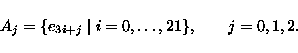
Modern CASs allow to solve this problem in a standard way. We used Maple V Release 5 for this calculation. It provides a symbolic (i.e., exact) solution doing calculations with integers of very high length (up to 500,000). The whole solution of the system of equations took several minutes on a hardware that was standard in 1996.
.
For a long time, it was an open problem whether there is an orthomodular lattice admitting no nontrivial group-valued measure (for any commutative group). Such an example with 239 atoms, 262 blocks and 504 elements is the main result of [7]. It is frequently cited because of its relation to algebraic and ring-theoretical questions of quantum logics. It is interesting that an alternative (quite different) solution was found independently by Weber [11]. Both examples required a computer-aided verification. Moreover, in the example by Weber, computer was also used to check the conditions of the Loop Lemma. Hence specialized programs were necessary to prove that the structure is really an orthomodular lattice and that it does not admit nonzero group-valued measures.
Contrary to this approach, in the example from [7] arguments were presented that allowed even a manual (not computer-aided) verification of important facts. Nevertheless, these arguments were complex and they were found by an extensive use of a specialized software (again written originally in Pascal). The foundation stone of the construction is the orthomodular lattice L44 with 44 atoms ei,
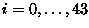
, and 44 blocks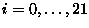
and indices are evaluated modulo 44. (Its structure is similar to that of L66 from the preceeding section and similar arguments are used to verify the conditions of the Loop Lemma.)
Looking for the measures on L44, we again obtain a sparse
system of
linear equations, but the task is more complex than in the preceding
section. When it is solved over the field of reals, we obtain a
one-dimensional space of solutions:
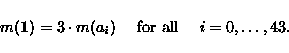
First of all, we looked for finite fields in which the matrix of the system has a smaller rank than in
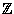
. There was a need for such a method of solving a system of linear equations that does not divide rows of the matrix of the system (in order to find solutions in all finite fields). Maple offers a built-in function ffgausselim from the linalg package. This function performs a fraction free Gaussian elimination of a matrix. The output matrix showed us that the only finite fields that require special attention are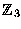
and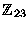
. It was very easy to find this result because the rows of the output matrix consisted of multiples of numbers 3 and 23; this was found by using function factorset from the numtheory package.Maple has a lot of facilities for calculations over finite fields. We used function Linsolve(.) mod p from the linalg package which solves systems of linear equations even over rings. This function returned the solutions over the Galois fields
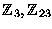
in a very transparent form. (Surprisingly, the latter are rather complex.) Maple V Release 5 under Windows 95 solved this problem in one minute, running on a PC with processor AMD K5, 100MHz and 48MB RAM.The rest of the example from [7] is a ``pasting" of 6 copies of L44 and 8 Boolean algebras in such a way that no nontrivial measure on L44 (even with values in ) admits an extension to a measure on the whole structure. Thus the zero measure remains the only group-valued measure on the resulting orthomodular lattice.
.
We proved the applicability and usefulness of modern CASs (namely Maple V Release 5) for computer proofs in mathematics. Writing specialized programs for this purpose requires a lot of work and reduces the transparency and reliability of results. Contrary to this, CASs allow a solution using standard tools that are already prepared. The necessary code reduces to tens of lines and a risk of an error of the user is thus reduced to minimum. (A question remains open whether there is no bug in the CAS producing a wrong output.) Even inexperienced users can use this CAS for solving nontrivial mathematical problems very easily. Our worksheet consisted of only about 25 lines of the source code. Current software and hardware allows to solve these tasks in a quite satisfactory computing time. Thus the present CASs are efficient enough to become a common working tool even for mathematicians dealing with basic research. We verified this on two highly nontrivial constructions from quantum logic theory which solved important problems that remained open for long time.
Despite the progress of technique, the role of a mathematician as a designer of a possible example is still unavoidable. Although attempts have been made with automatic generation of algebraic structures (see e.g. [5]), we are not aware of any important result obtained by this ``blind search" strategy. As a partial success, one part of the construction of [11] uses a computer generation, but it is used to combine parts that were suggested by the author. So human intuition and ideas remain necessary for progress in mathematics. The role of a computer as a working tool for testing hypotheses increased substantially by the use of CASs.
.
.
This document was generated using the LaTeX2HTML translator Version 98.1p1 release (March 2nd, 1998)
Copyright © 1993, 1994, 1995, 1996, 1997, Nikos Drakos, Computer Based Learning Unit, University of Leeds.
The command line arguments were:
latex2html navara.tex.
The translation was initiated and manually edited by Ladislav Kocbach.